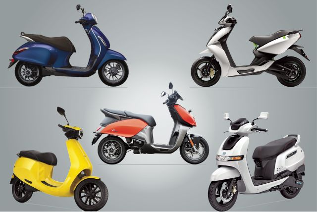
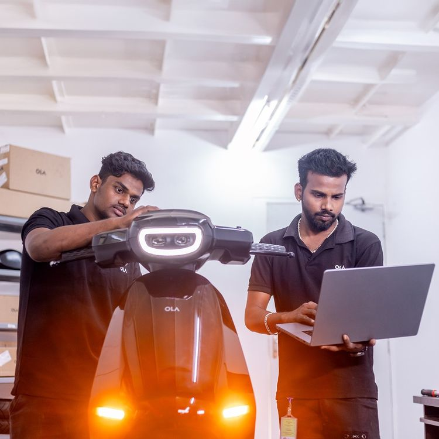
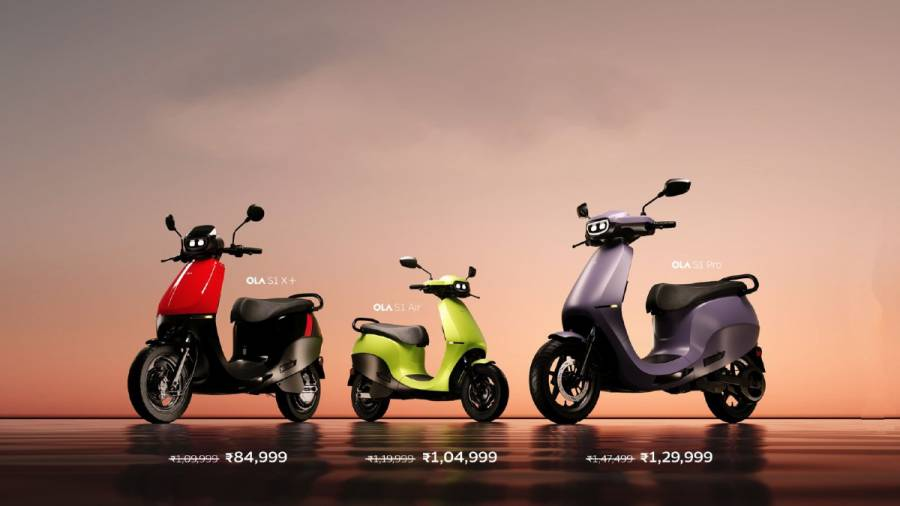

Ola S1 Pro Gen 2 is the most favored scooter among the Indian audience and therefore we present its specification from A to Z.
Overview of Ola Electric Bike
As the market for electric vehicles continues to grow, Ola Electric has emerged as a key player in the industry with its innovative electric bikes. With a focus on sustainability and technology, Ola Electric has quickly gained a following among environmentally conscious consumers. This guide will provide you with everything you need to know about Ola Electric bikes, from their features and benefits to their brand marketing strategies and social media presence. Whether you are a potential buyer or simply interested in the latest trends in the electric vehicle industry, this guide will give you a comprehensive overview of Ola Electric bikes.
Comparisons with other electric bike brands
When considering purchasing an Ola Electric bike, it's essential to weigh your options against other electric bike brands in the market. Comparisons in terms of performance, battery life, charging time, and overall cost are crucial factors to consider. Ola Electric bikes stand out for their advanced features, innovative technology, and commitment to sustainability. By comparing them with other brands, you can make an informed decision based on your specific needs and preferences. Stay informed on the latest trends and developments in the electric bike industry to determine how Ola Electric bikes stack up against the competition.
Features and specifications of Ola Electric Bike
When considering the features and specifications of Ola Electric bikes, it's essential to delve into the technical aspects that make them stand out in the market. From powerful lithium-ion batteries to regenerative braking systems, Ola Electric bikes are designed to offer a seamless and eco-friendly riding experience. With top-notch safety features, futuristic design elements, and impressive performance metrics, these bikes represent the pinnacle of innovation in the electric vehicle sector. Stay tuned as we break down the key features and specifications of Ola Electric bikes in detail , providing you with a comprehensive understanding of what sets them apart from the competition.
Benefits of using Ola Electric Bike
Transitioning to an Ola Electric bike comes with a plethora of benefits that extend beyond just eco-friendliness. These bikes offer substantial cost savings on fuel and maintenance, making them a practical and economical choice for daily commutes. Additionally, their near-silent operation contributes to a quieter and cleaner environment in urban areas. The convenience of charging at home or at public stations adds a layer of flexibility that traditional fuel-powered bikes can't match. With reduced emissions and a lower carbon footprint, riding an Ola Electric bike aligns with a sustainable lifestyle while enjoying a smooth and powerful ride. Stay tuned for more insights on the advantages of incorporating Ola Electric bikes into your transportation routine.
Maintenance and servicing of Ola Electric Bike
Ensuring proper maintenance and servicing for your Ola Electric bike is essential to ensure its longevity and optimal performance. Regularly scheduled maintenance checks and timely servicing will help prevent potential issues and keep your bike running smoothly. Ola Electric provides a network of authorized service centers and trained professionals to assist with any maintenance needs. Understanding the recommended maintenance schedule and following it diligently will not only save you from unexpected breakdowns but also prolong the lifespan of your electric bike. Stay tuned for our next blog post on essential maintenance tips for your Ola Electric bike.
How to purchase an Ola Electric Bike
Interested in owning an Ola Electric bike? To purchase one, visit the official Ola Electric website and explore the range of models available. Select your preferred model and proceed with the booking process by providing the necessary details and completing the payment transaction. Keep an eye out for any ongoing promotions or discounts that could help you save on your purchase. Once the order is confirmed, you will receive further instructions on the delivery timeline and process. Stay tuned for our upcoming blog post on tips for selecting the right Ola Electric bike model to suit your needs and preferences.
Customer reviews and feedback on Ola Electric Bike
Before making your final decision on purchasing an Ola Electric bike, it is crucial to consider the feedback and reviews from customers who have already experienced the product. Check online forums, social media platforms, and review websites to gather insights on the performance, durability, and overall satisfaction level of Ola Electric bike owners. Pay close attention to any common patterns or recurring issues mentioned in the reviews to make an informed choice. Stay updated for our following blog post, where we will delve into the top features and specifications of the most popular Ola Electric bike models on the market.
Conclusion: Is the Ola Electric Bike worth investing in?
In conclusion, investing in an Ola Electric bike is a decision that requires thorough consideration. By analyzing customer feedback and reviews, you can gain valuable insights into the product's performance and reliability. Stay tuned for our next blog post, where we will provide an in-depth analysis of the key features and specifications of the leading Ola Electric bike models available. This information will help you make an informed decision on whether the Ola Electric bike is worth the investment for your personal or professional needs. Assess your priorities and requirements carefully to determine if the Ola Electric bike aligns with your objectives.
